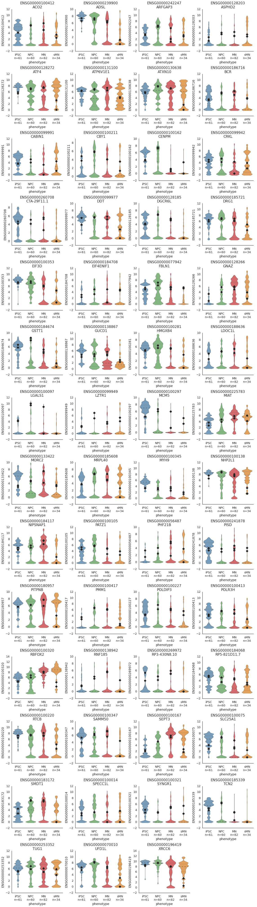
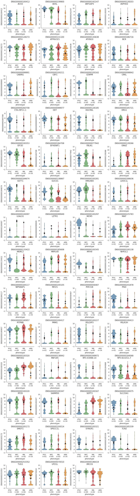

Create an advanced datapackage¶
In this notebook, we will create a new flotilla Study with a few more parameters than we had in the barebones one. We wil cover:
- Using the metadata_phenotype_order, metadata_phenotype_to_color, and metadata_phenotype_to_marker arguments to tell flotilla in what order you want your data plotted for violinplots, the color, and the plotting symbol
- Using unique ENSEMBL ids for gene ids, and MISO ids for splicing events
- Using larger {expression,splicing}_feature_data to rename gene ids and splicing events
Let’s start by importing the packages we’ll need.
import pandas as pd
import numpy as np
import flotilla
Couldn't import dot_parser, loading of dot files will not be possible.
The data: a neural induction protocol¶

- Induced pluripotent cells (P, iPSC)
- Neural progenitor cells (N, NPC)
- Motor neurons (M, MN)
- Stressed motor neurons (S, sMN)
Note: This is a subset of the data, just the genes and splicing events on chromosome 22.
Metadata, expression data, and splicing data¶
Load in metadata about the samples, expression data, and their splicing data.
metadata = pd.read_csv('http://sauron.ucsd.edu/flotilla_projects/neural_diff_chr22/metadata.csv', index_col=0)
metadata.head()
| pooled | phenotype | outlier | |
|---|---|---|---|
| original_name | |||
| M1_01 | False | MN | False |
| M1_02 | False | MN | False |
| M1_03 | False | MN | False |
| M1_04 | False | MN | False |
| M1_05 | False | MN | False |
expression = pd.read_csv('http://sauron.ucsd.edu/flotilla_projects/neural_diff_chr22/expression.csv', index_col=0)
expression.head()
| ENSG00000233866 | ENSG00000229286 | ENSG00000235265 | ENSG00000223875 | ENSG00000215270 | ENSG00000206195 | ENSG00000271672 | ENSG00000272872 | ENSG00000232775 | ENSG00000271127 | ... | ENSG00000100299 | ENSG00000212569 | ENSG00000251322 | ENSG00000206841 | ENSG00000225929 | ENSG00000100312 | ENSG00000254499 | ENSG00000213683 | ENSG00000184319 | ENSG00000079974 | |
|---|---|---|---|---|---|---|---|---|---|---|---|---|---|---|---|---|---|---|---|---|---|
| sample_id | |||||||||||||||||||||
| CVN_01 | 0.380964 | NaN | NaN | NaN | NaN | 0.988765 | NaN | 0 | NaN | 0.000000 | ... | 1.041467 | NaN | 0 | NaN | 0.745853 | 0 | 0 | NaN | NaN | 3.026128 |
| CVN_02 | 0.678509 | NaN | NaN | NaN | NaN | 1.324344 | NaN | 0 | NaN | 0.000000 | ... | 1.347575 | NaN | 0 | NaN | 0.168166 | 0 | 0 | NaN | NaN | 2.871832 |
| CVN_03 | 1.625612 | NaN | NaN | NaN | NaN | 0.000000 | NaN | 0 | NaN | 0.000000 | ... | 0.000000 | NaN | 0 | NaN | 0.266781 | 0 | 0 | NaN | NaN | 3.536874 |
| CVN_04 | 1.172500 | NaN | NaN | NaN | NaN | 1.921577 | NaN | 0 | NaN | 0.000000 | ... | 0.954419 | NaN | 0 | NaN | 0.204180 | 0 | 0 | NaN | NaN | 2.675213 |
| CVN_05 | 1.993928 | NaN | NaN | NaN | NaN | 0.000000 | NaN | 0 | NaN | 1.925453 | ... | 1.683804 | NaN | 0 | NaN | 0.313015 | 0 | 0 | NaN | NaN | 4.263993 |
5 rows × 1263 columns
splicing = pd.read_csv('http://sauron.ucsd.edu/flotilla_projects/neural_diff_chr22/splicing.csv', index_col=0)
splicing.head()
| chr22:16187165:16187302:-@chr22:16186946|16186953:16186811:- | chr22:16189032:16189143:-@chr22:16187278|16187302:16187165:- | chr22:16190681:16190791:-@chr22:16189378|16189411:16189264:- | chr22:16455250:16455438:-@chr22:16454933:16455249:- | chr22:16598138:16598344:-@chr22:16596905:16598137:- | chr22:16950841:16951225:+@chr22:16951226:16952202:+ | chr22:17565849:17566119:+@chr22:17577952:17577976:+@chr22:17578687:17578833:+ | chr22:17602485:17602929:+@chr22:17603459:17603628:+@chr22:17605545:17605661:+ | chr22:17621949:17622123:-@chr22:17619440:17619628:-@chr22:17618410:17619247:- | chr22:17639347:17640058:-@chr22:17630432:17630635:-@chr22:17629338:17629450:- | ... | chr22:51207980:51207853|51207883:-@chr22:51207469:51207552:- | chr22:51208333:51208444:-@chr22:51207977|51207980:51207883:- | chr22:51214200:51214279:-@chr22:51208333:51208444:-@chr22:51207883:51207980:- | chr22:51215098:51215177:-@chr22:51214200:51214279:-@chr22:51207883:51207980:- | chr22:51220616:51220779:-@chr22:51219041:51219146:-@chr22:51216380:51216409:- | chr22:51221714:51221467|51221473:-@chr22:51220616:51220779:- | chr22:51221929:51222087:-@chr22:51220775|51220779:51220616:- | chr22:51221929:51222087:-@chr22:51221319:51221473:-@chr22:51220616:51220779:- | chr22:51221929:51222087:-@chr22:51221467:51221714:-@chr22:51220616:51220779:- | chr22:51222225:51222292|51222449:+@chr22:51223601:51223721:+ | |
|---|---|---|---|---|---|---|---|---|---|---|---|---|---|---|---|---|---|---|---|---|---|
| CVN_01 | NaN | NaN | NaN | NaN | NaN | NaN | NaN | NaN | NaN | NaN | ... | NaN | NaN | NaN | NaN | NaN | NaN | NaN | NaN | NaN | NaN |
| CVN_02 | NaN | NaN | NaN | 0.96 | 0.02 | NaN | NaN | NaN | NaN | NaN | ... | NaN | NaN | NaN | NaN | NaN | NaN | NaN | NaN | NaN | NaN |
| CVN_03 | NaN | NaN | NaN | 0.99 | NaN | NaN | NaN | NaN | NaN | NaN | ... | NaN | NaN | NaN | NaN | NaN | NaN | NaN | NaN | NaN | NaN |
| CVN_04 | NaN | 0.07 | NaN | 0.93 | NaN | NaN | NaN | NaN | NaN | NaN | ... | NaN | NaN | NaN | NaN | NaN | NaN | NaN | NaN | NaN | NaN |
| CVN_05 | NaN | NaN | NaN | 0.98 | 0.09 | NaN | NaN | 0.01 | NaN | NaN | ... | NaN | NaN | NaN | NaN | NaN | NaN | NaN | NaN | NaN | NaN |
5 rows × 1307 columns
mapping_stats = pd.read_csv('http://sauron.ucsd.edu/flotilla_projects/neural_diff_chr22/mapping_stats.csv', index_col=0)
mapping_stats.head()
| Started job on | Started mapping on | Finished on | Mapping speed, Million of reads per hour | Number of input reads | Average input read length | Uniquely mapped reads number | Uniquely mapped reads % | Average mapped length | Number of splices: Total | ... | Number of reads mapped to too many loci | % of reads mapped to too many loci | % of reads unmapped: too many mismatches | % of reads unmapped: too short | % of reads unmapped: other | % splices: Annotated (sjdb) | % splices: GT/AG | % splices: GC/AG | % splices: AT/AC | % splices: Non-canonical | |
|---|---|---|---|---|---|---|---|---|---|---|---|---|---|---|---|---|---|---|---|---|---|
| M1_01 | Apr 29 19:58:18 | Apr 29 19:58:40 | Apr 29 20:01:22 | 274.58 | 12356210 | 184 | 10684874 | 86.47 | 181.36 | 4629200 | ... | 19107 | 0.15 | 0 | 11.02 | 0.07 | 98.500238 | 99.251836 | 0.516029 | 0.109112 | 0.123023 |
| M1_02 | Apr 29 17:59:28 | Apr 29 18:01:21 | Apr 29 18:19:15 | 41.62 | 12416854 | 184 | 11235549 | 90.49 | 181.70 | 2706035 | ... | 15330 | 0.12 | 0 | 7.59 | 0.04 | 98.155715 | 99.029318 | 0.766213 | 0.077013 | 0.127456 |
| M1_03 | Apr 29 19:35:13 | Apr 29 19:35:39 | Apr 29 19:39:41 | 294.61 | 19804563 | 184 | 17584862 | 88.79 | 181.38 | 8496381 | ... | 22134 | 0.11 | 0 | 8.55 | 0.04 | 98.976329 | 99.134149 | 0.632493 | 0.117073 | 0.116285 |
| M1_04 | Apr 29 18:30:05 | Apr 29 18:30:31 | Apr 29 18:32:29 | 263.10 | 8623786 | 184 | 7599917 | 88.13 | 181.29 | 4547233 | ... | 12917 | 0.15 | 0 | 8.93 | 0.04 | 99.004713 | 99.043924 | 0.717161 | 0.105801 | 0.133114 |
| M1_05 | Apr 29 19:19:31 | Apr 29 19:19:53 | Apr 29 19:22:28 | 267.28 | 11507835 | 184 | 9726225 | 84.52 | 181.33 | 3429570 | ... | 11731 | 0.10 | 0 | 13.28 | 0.04 | 98.303490 | 98.887120 | 0.901192 | 0.117478 | 0.094210 |
5 rows × 32 columns
Feature data¶
Now we’ll get to the more interesting part, where we have to deal with the data about the features and splicing events.
Expression feature data¶
expression_feature = pd.read_csv('http://sauron.ucsd.edu/flotilla_projects/neural_diff_chr22/expression_feature.csv',
index_col=0)
expression_feature.head()
| biomark_neural_panel | confident_rbp | gencode_id | gene_name | gene_status | gene_type | havana_gene | level | rbp | ribosomal | ribosomal_subunit | synapse | tag | transcript_id | transcript_name | transcript_status | transcript_type | transcription_factor | |
|---|---|---|---|---|---|---|---|---|---|---|---|---|---|---|---|---|---|---|
| ENSG00000233866 | False | False | ENSG00000233866.1 | LA16c-4G1.3 | KNOWN | lincRNA | OTTHUMG00000140195.1 | 2 | False | False | False | False | NaN | ENSG00000233866.1 | LA16c-4G1.3 | KNOWN | lincRNA | False |
| ENSG00000229286 | False | False | ENSG00000229286.1 | LA16c-4G1.4 | KNOWN | pseudogene | OTTHUMG00000140193.1 | 2 | False | False | False | False | NaN | ENSG00000229286.1 | LA16c-4G1.4 | KNOWN | pseudogene | False |
| ENSG00000235265 | False | False | ENSG00000235265.1 | LA16c-4G1.5 | KNOWN | pseudogene | OTTHUMG00000140197.1 | 2 | False | False | False | False | NaN | ENSG00000235265.1 | LA16c-4G1.5 | KNOWN | pseudogene | False |
| ENSG00000223875 | False | False | ENSG00000223875.1 | NBEAP3 | KNOWN | pseudogene | OTTHUMG00000140196.1 | 2 | False | False | False | False | NaN | ENSG00000223875.1 | NBEAP3 | KNOWN | pseudogene | False |
| ENSG00000215270 | False | False | ENSG00000215270.3 | LA16c-60H5.7 | KNOWN | pseudogene | OTTHUMG00000140200.1 | 1 | False | False | False | False | pseudo_consens | ENSG00000215270.3 | LA16c-60H5.7 | KNOWN | pseudogene | False |
Notice that the index, or row names of this dataframe contains the ids from expression, and has a bunch of columns indicating whether this feature belongs to a group, like confident_rbp for “confident RNA-binding proteins”, or a category such as the gene_type. All of these will be used, but I don’t want to use all of them, so let’s make a list of columns to ignore.
ignore_subset_cols = ["ensembl_gene", "gencode_gene", "gencode_transcript", "ensembl_transcript",
"gene_name", "transcript_id", "havana_gene", "gencode_id"]
Also, we’ll want to remember that we want to rename genes using the gene_name column.
Splicing feature data¶
Next, let’s get the metadata about the splicing events.
splicing_feature = pd.read_csv('http://sauron.ucsd.edu/flotilla_projects/neural_diff_chr22/splicing_feature.csv',
index_col=0)
splicing_feature.head()
| gene_type | gene_name | gencode_transcript | ensembl_transcript | ensembl_gene | gencode_gene | splice_type | biomark_neural_panel | confident_rbp | rbp | ribosomal | ribosomal_subunit | synapse | transcription_factor | |
|---|---|---|---|---|---|---|---|---|---|---|---|---|---|---|
| chr22:16187165:16187302:-@chr22:16186946|16186953:16186811:- | processed_transcript | AP000525.9 | ENST00000458623.1,ENST00000383038.3,ENST000004... | ENST00000447898,ENST00000383038,ENST0000043778... | ENSG00000206195 | ENSG00000206195.6 | A3SS | False | False | False | False | False | False | False |
| chr22:16189032:16189143:-@chr22:16187278|16187302:16187165:- | processed_transcript | AP000525.9 | ENST00000383038.3,ENST00000447898.1,ENST000004... | ENST00000447898,ENST00000383038,ENST0000043778... | ENSG00000206195 | ENSG00000206195.6 | A3SS | False | False | False | False | False | False | False |
| chr22:16190681:16190791:-@chr22:16189378|16189411:16189264:- | processed_transcript | AP000525.9 | ENST00000383038.3,ENST00000447898.1,ENST000004... | ENST00000447898,ENST00000383038,ENST0000043778... | ENSG00000206195 | ENSG00000206195.6 | A3SS | False | False | False | False | False | False | False |
| chr22:16455250:16455438:-@chr22:16454933:16455249:- | NaN | NaN | NaN | NaN | NaN | NaN | TANDEMUTR | NaN | NaN | NaN | NaN | NaN | NaN | NaN |
| chr22:16598138:16598344:-@chr22:16596905:16598137:- | NaN | NaN | NaN | NaN | NaN | NaN | TANDEMUTR | NaN | NaN | NaN | NaN | NaN | NaN | NaN |
Again, there’s a lot of columns here! Looks like we want to use gene_name to convert the crazy MISO ids to a known gene name
Create new phenotype groups with metadata¶
Now that we have all the data that we want, let’s manipulate the metadata DataFrame to have some more informative data columns. Let’s add individual columns of each phenotype.
for phenotype, df in metadata.groupby('phenotype'):
metadata[phenotype] = False
metadata.ix[df.index, phenotype] = True
metadata.head()
| pooled | phenotype | outlier | MN | NPC | iPSC | sMN | |
|---|---|---|---|---|---|---|---|
| original_name | |||||||
| M1_01 | False | MN | False | True | False | False | False |
| M1_02 | False | MN | False | True | False | False | False |
| M1_03 | False | MN | False | True | False | False | False |
| M1_04 | False | MN | False | True | False | False | False |
| M1_05 | False | MN | False | True | False | False | False |
Now, let’s create the “neuron” group from the motor neurons (MN) and stressed motor neurons (sMN)
metadata['neuron'] = metadata.MN | metadata.sMN
metadata.head()
| pooled | phenotype | outlier | MN | NPC | iPSC | sMN | neuron | |
|---|---|---|---|---|---|---|---|---|
| original_name | ||||||||
| M1_01 | False | MN | False | True | False | False | False | True |
| M1_02 | False | MN | False | True | False | False | False | True |
| M1_03 | False | MN | False | True | False | False | False | True |
| M1_04 | False | MN | False | True | False | False | False | True |
| M1_05 | False | MN | False | True | False | False | False | True |
And let’s add a “progenitor” category with the iPSC and NPCs
metadata['progenitor'] = metadata.iPSC | metadata.NPC
metadata.head()
| pooled | phenotype | outlier | MN | NPC | iPSC | sMN | neuron | progenitor | |
|---|---|---|---|---|---|---|---|---|---|
| original_name | |||||||||
| M1_01 | False | MN | False | True | False | False | False | True | False |
| M1_02 | False | MN | False | True | False | False | False | True | False |
| M1_03 | False | MN | False | True | False | False | False | True | False |
| M1_04 | False | MN | False | True | False | False | False | True | False |
| M1_05 | False | MN | False | True | False | False | False | True | False |
Next, let’s pick some nice colors for these samples
import seaborn as sns
import matplotlib as mpl
palette = map(mpl.colors.rgb2hex, sns.color_palette('Set1'))
sns.palplot(palette)
/usr/local/lib/python2.7/site-packages/matplotlib/figure.py:1644: UserWarning: This figure includes Axes that are not compatible with tight_layout, so its results might be incorrect.
warnings.warn("This figure includes Axes that are not "
phenotype_to_color = {'iPSC': palette[1], # blue
'NPC': palette[2], # green
'MN': palette[0], # red
'sMN': palette[4]} # orange
One other thing we’ll need to do is to create list with the phenotypes in the order we want to plot them. This is particularly relevant for violinplots. By default, the phenotypes are plotted in alphabetical order. Since we have a differentiation time course, we’ll want the phenotype order to be the differentiation order.
phenotype_order = ['iPSC', 'NPC', 'MN', 'sMN']
Now we’re ready to create the study!
study = flotilla.Study(# Metadata about samples
sample_metadata=metadata,
# Version for this study, to track changes
version='0.1.0',
# pandas.DataFrame with expression data, created above
expression_data=expression,
# pandas.DataFrame with expression feature data, loaded above
expression_feature_data=expression_feature,
# Which column in expression_feature_data to use to rename
expression_feature_rename_col='gene_name',
# Ignore those weird columns we don't to use as subset in our feature data
expression_feature_ignore_subset_cols=ignore_subset_cols,
# pandas.DataFrame with splicing data, created above
splicing_data=splicing,
# pandas.DataFrame of splicing feature data, loaded above
splicing_feature_data=splicing_feature,
# Column in feature_data to map MISO ids to symbols
splicing_feature_rename_col='gene_name',
# Ignore those weird columns we don't to use as subset in our feature data
splicing_feature_ignore_subset_cols=ignore_subset_cols,
#pandas.DataFrame with mapping statistics, created above
mapping_stats_data=mapping_stats,
# column with number of mapped reads
mapping_stats_number_mapped_col='Uniquely mapped reads number',
# specify a dictionary mapping phenotype to colors
metadata_phenotype_to_color=phenotype_to_color,
# Specify the order which you would like samples to be plotted for violinplots
metadata_phenotype_order=phenotype_order,
# Specify to remove the outliers
drop_outliers=True)
2014-11-06 10:21:10 Initializing Study
2014-11-06 10:21:10 Initializing Predictor configuration manager for Study
2014-11-06 10:21:10 Predictor ExtraTreesClassifier is of type <class 'sklearn.ensemble.forest.ExtraTreesClassifier'>
2014-11-06 10:21:10 Added ExtraTreesClassifier to default predictors
2014-11-06 10:21:10 Predictor ExtraTreesRegressor is of type <class 'sklearn.ensemble.forest.ExtraTreesRegressor'>
2014-11-06 10:21:10 Added ExtraTreesRegressor to default predictors
2014-11-06 10:21:10 Predictor GradientBoostingClassifier is of type <class 'sklearn.ensemble.gradient_boosting.GradientBoostingClassifier'>
2014-11-06 10:21:10 Added GradientBoostingClassifier to default predictors
2014-11-06 10:21:10 Predictor GradientBoostingRegressor is of type <class 'sklearn.ensemble.gradient_boosting.GradientBoostingRegressor'>
2014-11-06 10:21:10 Added GradientBoostingRegressor to default predictors
2014-11-06 10:21:10 Loading metadata
2014-11-06 10:21:10 Loading expression data
2014-11-06 10:21:10 Initializing expression
2014-11-06 10:21:10 Done initializing expression
2014-11-06 10:21:10 Loading splicing data
2014-11-06 10:21:10 Initializing splicing
2014-11-06 10:21:10 Done initializing splicing
2014-11-06 10:21:10 Successfully initialized a Study object!
No phenotype to marker (matplotlib plotting symbol) was provided, so each phenotype will be plotted as a circle in the PCA visualizations.
samples had too few mapped reads (<5.0e+05 reads):
M2nd_23, M2nd_30, M2nd_31, M2nd_32, M3_10, P4_2, P8_12, P8_3, P8_4, P8_7, P8_8, P8_9, MSA_25
Removing technical outliers from consideration in expression:
M2nd_23, M2nd_30, M2nd_31, M2nd_32, M3_10, P4_2, P8_12, P8_3, P8_4, P8_7, P8_8, P8_9, MSA_25
Removing technical outliers from consideration in splicing:
M2nd_23, M2nd_30, M2nd_31, M2nd_32, M3_10, P4_2, P8_12, P8_3, P8_4, P8_7, P8_8, P8_9, MSA_25
For example, here’s the gene expression of RBFOX2, plotted in the phenotype order that we want.
study.plot_gene('RBFOX2')
/usr/local/lib/python2.7/site-packages/matplotlib/font_manager.py:1279: UserWarning: findfont: Font family ['Helvetica'] not found. Falling back to Bitstream Vera Sans
(prop.get_family(), self.defaultFamily[fontext]))
study.plot_pca()
<flotilla.visualize.decomposition.DecompositionViz at 0x10de21050>
 

Save the data¶
Now we can save the data with study.save('neural_diff_chr22')
study.save('neural_diff_chr22')
Wrote datapackage to /Users/olga/flotilla_projects/neural_diff_chr22/datapackage.json
We can take a look at the package and see what it looks like.
cat /Users/olga/flotilla_projects/neural_diff_chr22/datapackage.json
{
"name": "neural_diff_chr22",
"title": null,
"datapackage_version": "0.1.1",
"sources": null,
"licenses": null,
"resources": [
{
"path": "/Users/olga/flotilla_projects/neural_diff_chr22/splicing.csv.gz",
"format": "csv",
"name": "splicing",
"compression": "gzip"
},
{
"number_mapped_col": "Uniquely mapped reads number",
"path": "/Users/olga/flotilla_projects/neural_diff_chr22/mapping_stats.csv.gz",
"format": "csv",
"name": "mapping_stats",
"compression": "gzip"
},
{
"name": "expression_feature",
"format": "csv",
"rename_col": "gene_name",
"ignore_subset_cols": [
"ensembl_gene",
"gencode_gene",
"gencode_transcript",
"ensembl_transcript",
"gene_name",
"transcript_id",
"havana_gene",
"gencode_id"
],
"path": "/Users/olga/flotilla_projects/neural_diff_chr22/expression_feature.csv.gz",
"compression": "gzip"
},
{
"name": "expression",
"log_base": null,
"format": "csv",
"thresh": -Infinity,
"path": "/Users/olga/flotilla_projects/neural_diff_chr22/expression.csv.gz",
"compression": "gzip"
},
{
"name": "splicing_feature",
"format": "csv",
"rename_col": "gene_name",
"ignore_subset_cols": [
"ensembl_gene",
"gencode_gene",
"gencode_transcript",
"ensembl_transcript",
"gene_name",
"transcript_id",
"havana_gene",
"gencode_id"
],
"path": "/Users/olga/flotilla_projects/neural_diff_chr22/splicing_feature.csv.gz",
"compression": "gzip"
},
{
"pooled_col": "pooled",
"name": "metadata",
"phenotype_to_marker": {
"iPSC": "o",
"MN": "o",
"NPC": "o",
"sMN": "o"
},
"format": "csv",
"minimum_samples": 0,
"phenotype_to_color": {
"iPSC": "#377eb8",
"MN": "#e41a1c",
"NPC": "#4eae4b",
"sMN": "#ff8101"
},
"path": "/Users/olga/flotilla_projects/neural_diff_chr22/metadata.csv.gz",
"phenotype_col": "phenotype",
"phenotype_order": [
"iPSC",
"NPC",
"MN",
"sMN"
],
"compression": "gzip"
}
]
}